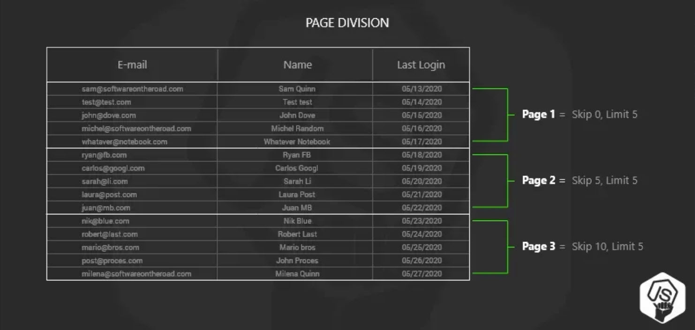

Post an announcement for your students this lesson in I-learn.
Ensure that communication in their teams is good as they plan out their projects for the remainder of the semester.
Important topics to teach your students this lesson. These topics will come primarily from the reading and should contain information that will help them with their assignments.
Encourage the students to continue with their project plan
Teach the following concepts
Help the students to understand that while not required to implement into project 2, the readings for the remainder of the semester can greatly enhance the usability of their web applications
What is pagination?
Let's think about the following data:
When paginating data, you can have the server drive it or the client. When decided how to do this, here are some things to consider:
How complex is the data? The more complex the data is or more connections it has to other tables in a database, the slower retrieving the data from the database will be.
How large is the dataset? A larger dataset means more data is being sent to the client.
How is the main audience going to interact with the data?
How often will they be searching and sorting? For someone who is interacting with the data frequently, the more the Client has to request the data from the server.
Summing everything up...
If the data is simple and easily managed - paginate on the client.
If the data is complex, large, or has the potential to become so in the near future - take the time to set up server-side pagination
Students should begin building their project
Remind students that there are platforms to check the current state of the project's API calls. One greate resource to use is Postman
To help students gain experience working with using async requests to update the DOM, here is a class activity. The following zip file can be distributed to your students. It has tasks in it instructing them regarding what they should do. This can be done in a class setting as a group, in teams, or individually.
For your reference, here is an example of a completed copy of the class activity:
Assure students are actively working on their projects in accordance with their plans they created last lesson.
Encourage the students to maintain contact with the member of their team from WDD 330 to assure the team is on the same page.